전자상거래운용사 (2010-04-17 기출문제)
1과목: 인터넷 일반
1. 다음 중 인터넷에서 활용하는 프로토콜은?
- NetBios
- TCP/IP
- LAN
- DECnet
(정답률: 알수없음)

2. 다음 중 문장을 가운데 정렬할 경우 잘못 작성한 태그는?
- ＜P ALIGN="center"＞ 하나의 문장＜/p＞
- ＜LISTING ALIGN="center"＞ 하나의 문장 ＜/LISTING＞
- ＜DIV ALIGN="center"＞ 하나의 문장＜/DIV＞
- ＜CENTER＞ 하나의 문장 ＜/CENTER＞
(정답률: 알수없음)
3. 이용자의 동의를 구하여 개인 정보를 수집하려 한다. 이럴 경우 이용자에게 고지하거나 약관에 명시해야 할 것이 아닌 것은?
- 서비스 제공자의 자산 규모
- 수집하는 개인 정보의 보유 기간 및 이용 기간
- 개인 정보의 수집 목적 및 이용 목적
- 개인 정보 관리 책임자의 소속, 성명, 연락처
(정답률: 알수없음)
4. 다음 중 자바스크립트의 변수선언이 잘못된 것은?
- var lee;
- var 3k1;
- var Korea, korea;
- var kang_1;
(정답률: 알수없음)
5. 다음 중 ＜A＞태그에 대한 설명으로 가장 옳은 것은?
- 같은 문서 내에서 이동하도록 하기 위해서는 이동할 위치를 설정해야 하고 이는 ＜A NAME="위치이름“＞으로 설정한다.
- 같은 문서 내에서 이동시키기 위해서 ＜A HREF="위치이름“＞...＜/A＞와 같이 작성한다.
- 다른 문서에 지정된 위치로 이동하기 위해서는 ＜A HREF="파일명:위치이름“＞..＜/A＞과 같이 작성한다.
- 위치 이름을 영문으로 작성하는 경우 대소문자를 구분한다.
(정답률: 알수없음)
6. 다음 중 전자우편에 관한 설명 중 가장 거리가 먼 것은?
- 전자우편은 편지를 주고받을 수 있는 서비스로 편지를 받을 때는 POP 서버를 편지를 보낼 때는 SMTP 서버를 이용한다.
- 전자 우편은 기본적으로 8bit 코드를 사용하여 한글을 사용하기에 적당하다.
- MIME은 텍스트, 이미지, 오디오, 비디오 등의 멀티미디어 전자우편을 주고받기 위한 인터넷 메일의 표준이다.
- 전자우편 주소 형식은 ID@도메인 주소이다.
(정답률: 알수없음)
7. 다음 중 HTML 태그에 대한 설명으로 잘못된 것은?
- ＜BR＞ 태그는 웹브라우저에서 줄을 넘길 때 사용하고, 닫는 태그는 없다.
- ＜NOBR＞...＜/NOBR＞ 태그는 이 태그 안에 있는 글자들을 웹브라우저에서 줄을 넘기지 못하도록 할 때 사용한다.
- “＆nbsp;"는 웹브라우저에 한 칸의 공백을 출력한다.
- ＜HR＞ 태그는 수직선 하나를 웹브라우저에 표시하는데, 닫는 태그는 없다.
(정답률: 알수없음)
8. 다음 중 CGI(Common Gateway Interface)의 작동 순서를 바르게 나열한 것은?
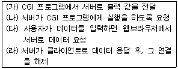
- (가)-(나)-(다)-(라)
- (가)-(다)-(나)-(라)
- (다)-(나)-(가)-(라)
- (다)-(가)-(나)-(라)
(정답률: 알수없음)
9. 다음 중 AND, OR, NOT과 같은 논리 연산자를 사용하여 키워드들에 대한 포함/불포함 관계를 지정하여 문서를 검색하는 기법은?
- 제한 검색
- 퍼지 검색
- 개념 검색
- 불린 검색
(정답률: 알수없음)
10. 다음 중 인터넷의 활성화로 인한 보안 위협 내용과 가장 거리가 먼 것은?
- 기업 LAN에 부정한 접속
- 클라이언트에 대해 특정한 서버처럼 속여 허위 정보 전달
- 인터넷상의 지식 공유 활용으로 기존 질서의 도전
- 침입자가 IP패킷을 가로채서 유용한 정보 도청
(정답률: 알수없음)
11. 다음 중 포토샵(Photoshop)에서 레이어, 채널, 패스 등의 정보를 저장하고 있어 추후 이미지의 수정 등 작업에 용이한 파일 형식은?
- *.PSD
- *.JPG
- *.GIF
- *.PNG
(정답률: 82%)
12. 다음은 웹 사이트를 개발할 때 필요한 단계들 이다. 그 순서가 가장 올바르게 나열된 것은?
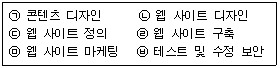
- (ㄱ)→(ㄴ)→(ㄷ)→㉥→(ㄹ)→(ㅁ)
- (ㄷ)→(ㄱ)→(ㄴ)→(ㄹ)→㉥→(ㅁ)
- (ㄱ)→(ㄴ)→(ㄷ)→(ㄹ)→(ㅁ)→㉥
- (ㄷ)→(ㄴ)→(ㄱ)→(ㄹ)→(ㅁ)→㉥
(정답률: 알수없음)
13. ASP에서 Response 객체는 서버에서 클라이언트에 정보를 보내기 위해 사용된다. 다음 중 Response 객체에 포함되지 않은 메소드는?
- BinaryRead
- AddHeader
- Clear
- BinaryWrite
(정답률: 알수없음)
14. 다음 중 HTML에서 사용하는 문자 모양 표현 태그로 옳지 않은 것은?
- ＜B＞＜/B＞ - 원하는 문자를 굵은 문자로 바꾸고자 할 때 사용
- ＜U＞＜/U＞ - 태그안의 글자를 밑줄친 글자로 표시 할 때 사용
- ＜EM＞＜/EM＞ - 강조로 이탤릭체로 표현할 경우 사용
- ＜STRONG＞＜/STRONG＞ - 원하는 문자를 인용체로 표현하고자 할 때 사용
(정답률: 알수없음)
15. 다음 중 데이터베이스에 대한 특징 중 옳지 않은 것은?
- 데이터의 공유가 가능하다.
- 데이터의 불일치를 막을 수 있다.
- 데이터에 대한 보안성이 높아진다.
- 프로그램이 데이터에 종속된다.
(정답률: 70%)
16. 다음 중 전자우편을 사용할 때 지켜야 할 예절로서 가장 거리가 먼 것은?
- 다른 메일 사용자에 편지를 보낼 때 메일의 내용은 짧고 간결해야 한다.
- 메일링 리스트 이용 시, 관련이 없는 여러 사람들에게 불필요한 메일을 보내는 것은 어쩔 수 없다.
- 네티켓을 잘 알지 못하는 사용자는 메일링 리스트에 가입하는 것을 자제해야 한다.
- 자신이 사용하고 있는 메일을 확인 했을 때 필요가 없다고 생각하는 편지들은 삭제 해 주는 것이 좋다.
(정답률: 73%)
17. 다음 중 UMS(Unified Messaging System)에 포함되지 않는 서비스는?
- 음성사서함
- 전자메일
- 팩스
- 게시판
(정답률: 알수없음)
18. 다음 중 인터넷에 대한 설명으로 가장 거리가 먼 것은?
- 인터넷은 전 세계의 컴퓨터를 연결하는 거대한 통신망이다.
- 인터넷상의 어떤 컴퓨터나 네트워크에서 이상이 발생하더라도 전체 네트워크에는 영향을 최소화하도록 구성되어 있다.
- 인터넷을 총괄, 관리하는 중앙본부로서의 역할을 하는 기관은 미국에 있다.
- 인터넷에서 이용할 수 있는 서비스로는 전자우편(e-mail), 원격컴퓨터 연결(Telnet), 파일전송(FTP) 등 다양하다.
(정답률: 73%)
19. 다음 중 괄호에 들어갈 알맞은 말을 순서적으로 나열한 것은?
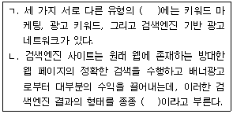
- 광고 마케팅, 유기적 검색
- 검색엔진 마케팅, 유기적 검색
- 웹 페이지 마케팅, 독립적 검색
- 웹 페이지 마케팅, 유기적 검색
(정답률: 알수없음)
20. 다음 중 자바 스크립트에 대한 설명으로 가장 옳지 않은 것은?
- 자바스크립트 언어는 Java Applet 등의 다른 웹 객체들과 연동이 가능하다.
- 자바스크립트는 많은 내장 객체를 지원하여 사용이 편리하다.
- 자바스크립트는 HTML 문서 내에 포함되어 실행될 수 있다.
- 자바스크립트는 다중 상속 등 다른 객체지향 방식의 언어가 가진 기능들을 완벽히 지원한다.
(정답률: 알수없음)
2과목: 전자상거래 일반
21. 다음 중 고객의 내적분석용 데이터가 아닌 것은?
- 인구 통계학적 데이터
- 라이프스타일 데이터
- 심리학적 데이터
- 고객의 개성, 의견, 흥미, 자아, 이미지 등의 데이터
(정답률: 알수없음)
22. 다음 중 텔레마케팅의 유형으로서 잘못 설명하고 있는 것은?
- 인바운드 텔레마케팅이란 기업이 고객에게 전화를 거는 기업주도형의 적극적인 마케팅 방식이다.
- 제3자 텔레마케팅이란 외부의 텔레마케팅 전문업체를 통해서 마케팅을 실시하는 방식이다.
- 소비자 텔레마케팅이란 기업에서 일반 소비자를 대상으로 마케팅을 전개하는 방식이다.
- BtoB 텔레마케팅이란 기업과 기업간에 이루어지는 마케팅 방식이다.
(정답률: 알수없음)
23. 다음 중 가상시장(e-marketplace)의 유형으로 볼 수 없는 것은?
- 경매형
- 카탈로그형
- 역경매형
- 정보제공형
(정답률: 50%)
24. 다음 중 상품 배송의 유형에 대한 설명으로 옳지 않은 것은?
- 재고보유 배송형 : 신속한 배송이 가능하며, 소비자 신뢰 제고의 효과가 있다.
- 재고 미보유 배송형 : 재고 유지 부담이 완화되나, 배송이 지연될 수 있다.
- 직접 배송형 : 최근 쇼핑몰의 대표적 유형으로 소비자 부담이 감소된다.
- 디지털 상품 배송형 : e-메일 및 직접 고객이 다운로드를 실시한다.
(정답률: 82%)
25. 최근 인터넷 환경에서 고객의 요구는 매우 모호한 패턴을 보이고 있다. 이러한 고객 요구에 대응하기 위한 인터넷 마케팅의 구체적인 방법을 잘못 설명한 것은?
- 상품/서비스의 개인화(customization) : 고객기호나 소비유형에 맞게 제품/서비스를 맞추어 준다.
- 추천(recommendation) : 고객이 추천해 주는 사람에게 판촉활동을 집중적으로 수행한다.
- 매칭(matching) : 중립적인 관점에서 고객 요구에 맞는 상품/서비스를 찾아준다.
- 적시 제공(just timing) : 고객에게 적절한 시간대에 상품 및 서비스를 제공해 준다.
(정답률: 알수없음)
26. 다음 중 인터넷을 통한 전자상거래의 특성으로 옳지 않은 것은?
- 지역적 한계를 극복하고 넓은 접근성을 유지할 수 있다.
- 사용자들의 즉각적인 반응을 유도할 수 있다.
- 고객의 위치를 언제 어디서나 즉시 파악할 수 있다.
- 인터넷을 통해 고객들에게 24시간 서비스를 해줄 수 있다.
(정답률: 알수없음)
27. 전자상거래의 주체를 기업, 정부, 개인(소비자)으로 구분할 때, 각 주체간의 다양한 전자상거래 유형의 구성이 가능하다. 민원서비스의 혁신을 통하여 질 높은 행정서비스를 일반 국민에게 제공하려고 만들어진 대한민국 전자정부사이트(http://www.egov.go.kr/)는 다음 중 어떤 유형에 가장 가깝다고 할 수 있는가?
- 기업대 정부(B2G)
- 정부대 정부(G2G)
- 기업대 개인(B2C)
- 정부대 개인(G2C)
(정답률: 알수없음)
28. 입소문(word-to-mouth)은 한번도 사용해보지 않은 집단을 사용자로 이끄는데 매우 중요한 역할을 한다. 다음 중 인터넷 상에서 입소문을 이끌어낼 기술로 적절하지 않은 것은?
- 유즈넷 그룹
- 순방문자수 관리
- 온라인 포럼이나 토론 그룹
- 인터넷과 기존 미디어의 기사
(정답률: 알수없음)
29. 다음 중 P2P(Peer to Peer) 서비스에 대한 설명으로 틀린 것은?
- P2P 비즈니스 모델은 기존의 인터넷 비즈니스 모델보다 마케팅 비용이 많이 든다.
- P2P는 검색엔진과 출판사, 경매사이트를 위협할 수 있는 새로운 인터넷 서비스이다.
- P2P 방식은 사용자간 MP3 파일을 무료로 교환할 수 있는 기술을 제공할 수 있다.
- P2P 시장의 경우 지적재산권 문제가 발생할 가능성이 높다.
(정답률: 알수없음)
30. 다음 중 광고효과를 계산할 때 1,000명(Impression) 당 비용으로 나타내는 것은?
- CRM
- CPM
- GRP
- CPC
(정답률: 알수없음)
31. 다음 중 4P 마케팅 전략에 해당하지 않는 것은?
- 제품(Product)
- 가격(Price)
- 공략(Push)
- 판촉(Promotion)
(정답률: 알수없음)
32. 전자상거래의 도입으로 인해 도매상, 소매상 등의 중개상이 사라질 것이라고 예측되었으나, 새로운 형태의 중개상이 출현하고 있으며, 이러한 두 현상이 동시에 벌어지고 있다. 다음 중 전자상거래 중개상의 역할로 보기 어려운 것은?
- 판매자의 제품과 소비자의 구매수요를 집합시키는 역할
- 집합된 내용 중에서 소비자가 원하는 수요의 내용과 판매자의 제품을 매치시키는 역할
- 소비자의 개인정보를 확보하여 판매자에게 제공하는 역할
- 소비자의 정보 필요 만족과 상거래 과정 전체의 비용 감소 역할
(정답률: 알수없음)
33. 다음이 설명하는 것은 무엇인가?
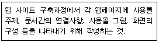
- 스토리보드
- HTML소스파일
- 원시프로그램
- 인터페이스
(정답률: 알수없음)
34. 다음 중 전사적자원관리(ERP : Enterprise Resource Planning) 시스템의 특징을 잘못 기술한 것은?
- 경영혁신과 업무 개선의 수단이 된다.
- 비정형화된 업무는 추가로 개발할 필요가 있다.
- 특정 업체에 장기적인 의존이 불가피하다.
- 자체개발 방식에 비해 구현 기간이 오래 걸린다.
(정답률: 알수없음)
35. 다음은 무엇을 설명한 것인가?
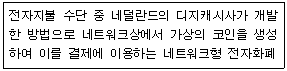
- FSTC
- First Virtual
- E-cash
- Mondex
(정답률: 70%)
36. 다음 중 e-SCM에 대한 설명으로 가장 옳은 것은?
- 기업간 물류업무 프로세스의 표준화가 선행되어야 한다.
- 재고 및 운영비용이 증대되며, 동시에 고객서비스가 향상된다.
- 기업 내부에서의 물류문제를 효과적으로 관리하기 위한 경영 기법이다.
- 소비자의 구매 정보가 생산자를 통해 원재료 공급자에게 전달될 수 없다.
(정답률: 알수없음)
37. 다음 중 전통적 상거래와 인터넷 상거래를 바르게 설명한 것은?
- 인터넷 상거래는 양방향 통신을 통한 1:1상호작용적 마케팅을 한다.
- 인터넷 상거래의 주요 관리대상은 제품이다.
- 네트워크는 전통적 상거래의 주요 판매거점이다.
- 전통적 상거래는 고객의 필요와 욕구를 신속하게 포착할 수 있다.
(정답률: 알수없음)
38. 다음 중 물류 관리의 원칙 중 3S1L을 정확히 표현하고 있는 것은?
- Speedy, Low, Safely, Surely
- Speedy, Safely, Strongly, Low
- Safely, Strongly, Low, Soundly
- Surely, Speedy, Soundly, Low
(정답률: 알수없음)
39. 사이버 쇼핑몰 구축을 위한 업무단계이다. ( )안에 적합한 것은?
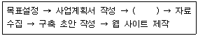
- 컨텐츠 결정
- 메인 페이지 디자인
- 검색엔진 등
- 광고
(정답률: 알수없음)
40. 다음 중 전자상거래의 장점을 소비자측 입장과 판매자측 입장으로 올바르게 구분한 것은?
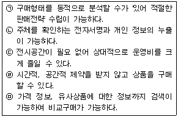
- 소비자측: (ㄱ), (ㄴ) - 판매자측: (ㄷ), (ㄹ), (ㅁ)
- 소비자측: (ㄹ), (ㅁ) - 판매자측: (ㄱ), (ㄷ)
- 소비자측: (ㄴ), (ㄹ), (ㅁ). - 판매자측: (ㄱ), (ㄷ)
- 소비자측: (ㄴ), (ㄷ), (ㄹ). - 판매자측: (ㄱ), (ㅁ)
(정답률: 알수없음)
3과목: 컴퓨터 및 통신 일반
41. 다음 중 자료의 단위가 작은 것부터 큰 순으로 바르게 나열된 것은?
- 비트 - 바이트 - 워드 - 필드 - 레코드
- 비트 - 바이트 - 필드 - 워드 - 레코드
- 바이트 - 비트 - 워드 - 필드 - 레코드
- 바이트 - 키로 - 기가 - 메가
(정답률: 알수없음)
42. 다음 중 운영체제의 기능이 아닌 것은?
- 프로세스 관리
- e-mail 관리
- 기억장치 관리
- 파일 관리
(정답률: 100%)
43. 다음 중 도메인 이름을 IP 주소로 바꾸어 주는 서버는?
- Proxy Server
- FTP Server
- DNS Server
- Web Server
(정답률: 알수없음)
44. 다음 중 차세대 인터넷 주소체계인 IPv6의 등장배경에 대한 설명으로 가장 거리가 먼 것은?
- 급속한 인터넷 사용자 수의 증가와 IPv4주소의 고갈
- 실시간 데이터 전송에 관한 요구 증가 및 확장
- 사용이 좀 더 복잡한 주소 체계의 필요성
- IP 수준에서의 보안강화 요구
(정답률: 알수없음)
45. 다음 설명 중 옳은 것으로만 묶인 것은?
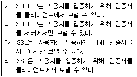
- 가, 다
- 가, 라
- 나, 다
- 나, 라
(정답률: 알수없음)
46. 다음 중 클라이언트/서버 시스템에 관련된 설명 중 가장 올바른 것은?
- 클라이언트/서버 시스템은 분산처리 시스템의 한 형태이다.
- 클라이언트 시스템은 절대 서버시스템이 될 수 없다.
- 클라이언트/서버 시스템은 호스트 기반 시스템에 비해 응답시간이 증가한다.
- 클라이언트와 서버 시스템간의 통신 안정성이 호스트기반 시스템에 비해 감소한다.
(정답률: 80%)
47. 다음이 설명하는 시리얼 버스의 규격은?
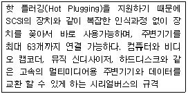
- USB
- RAID
- SCSI
- IEEE 1394
(정답률: 알수없음)
48. 다음 중에서 서버가 기업용으로 사용되기 위하여 갖추어야 할 기능으로 가장 거리가 먼 것은?
- 신뢰성
- 확장가능성
- 사용가능성
- 상호배타성
(정답률: 알수없음)
49. 다음 중 HTTP 쿠키에 관한 설명으로 가장 적절하지 않은 것은?
- 쿠키를 제공한 서버는 쿠키의 유효 기간을 지정할 수도 있고, 삭제를 지시할 수도 있다.
- 보안이 취약한 클라이언트에서 실행될 때, 사용자가 원하지 않는 작업이 실행될 수 있다.
- 일반적으로는 동일한 서버에 접속할 때 그 서버가 제공한 정보만 다시 들고 가지만, 어떤 서버에게 다시 들고 갈 것인가는 원래 쿠키를 제공한 서버가 정한다.
- 넷스케이프 커뮤니케이터나 인터넷 익스플로러 등의 브라우저에서는 쿠키 생성을 금지하는 옵션을 제공한다.
(정답률: 19%)
50. 다음 중 하나의 건물이나 대학 등과 같이 거리가 비교적 가까이 있는 컴퓨터들과 주변 장치를 연결하도록 구성된 통신망으로 가장 적절한 것은?
- LAN (Local Area Network)
- MAN (Metropolitan Area Network)
- WAN (Wide Area Network)
- WAP (Wireless Application Protocol)
(정답률: 알수없음)
51. 다음 중 전송매체에 대한 설명으로 옳지 않은 것은?
- 전송매체는 유선 또는 무선 형태가 있다.
- 동축케이블은 Token Ring형의 네트웍 구성에 용이하다.
- 광 케이블은 고속전송에 적합하며, 최대 대역폭은 300MHz 이하이다.
- 일반적으로 같은 네트워크 상황이면 무선 전송이 저속으로 운영된다.
(정답률: 알수없음)
52. 다음 중 정보화 사회에서 심각한 문제로 야기되는 사이버(Cyber) 범죄의 유형과 거리가 가장 먼 것은?
- 프로그램의 불법 복제
- 음란물 사이트의 운영
- 컴퓨터 하드웨어의 불법 구입
- ID를 도용하여 개인 사생활의 공개
(정답률: 알수없음)
53. 다음과 같은 특징을 가지는 바이러스는?
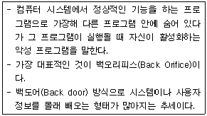
- 트로이목마
- 버그
- 매크로 바이러스
- 백신
(정답률: 알수없음)
54. 다음 중 월드 와이드 웹 보안 기법의 종류가 아닌 것은?
- SSL (Secure Socket Layer)
- S-HTTP (Secure-HTTP)
- PGP (Pretty Good Privacy)
- NCSC (National Computer Security Center)
(정답률: 알수없음)
55. 다음 중 웹서버에 가장 기본적으로 요구되는 프로토콜은?
- HTTP
- FTP
- SMTP
- ICMP
(정답률: 알수없음)
56. 다음 중 프로토콜의 표준화가 필요한 이유로 맞지 않는 것은?
- 호환성을 확보할 수 있다.
- 고가의 장비를 쉽게 판매할 수 있다.
- 장비의 부품을 쉽게 구할 수 있다.
- 장비를 개발하는 데 시간을 절약할 수 있다.
(정답률: 알수없음)
57. 다음 중 최종 서비스를 이용하기 위해 필요한 재화나 용역의 구축 단계별로 볼 때, 아래내용 을 세부 분류로 가지는 인터넷 산업은?
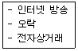
- 인터넷 기반 산업
- 인터넷 지원 산업
- 인터넷 활용 산업
- 소프트웨어 개발 산업
(정답률: 70%)
58. 다음 중 Windows 2000서버의 설명 중 옳은 것은?
- UNIX를 기반으로 만들어진 운영체제
- IIS(Internet Information Service)를 사용하여 인터넷 웹서버를 지원
- 소스(원시코드)가 공개되어 있어 프로그램 개발이 용이
- 무료로 사용할 수 있는 운영체제이다.
(정답률: 55%)
59. 다음 중 라우터의 역할에 해당되지 않는 것은?
- 최상위층 AS소속 라우팅테이블은 경로가 자동으로 지정된다.
- 라우터는 라우팅 테이블을 갖는다.
- RIP 프로토콜은 거리벡터 알고리즘을 사용한다.
- OSPF 프로토콜은 링크상태 알고리즘을 사용한다.
(정답률: 알수없음)
60. 다음 중 아래의 예처럼 나타내는 것을 무엇이라고 하는가?
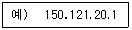
- DNS
- IP주소
- HTTP
- 프로토콜
(정답률: 알수없음)